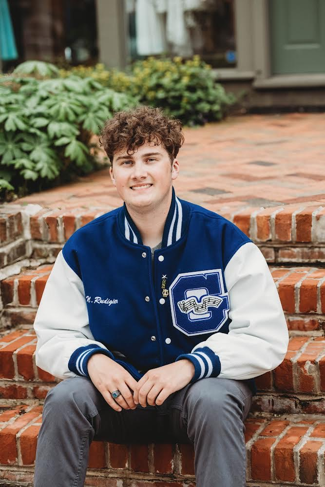
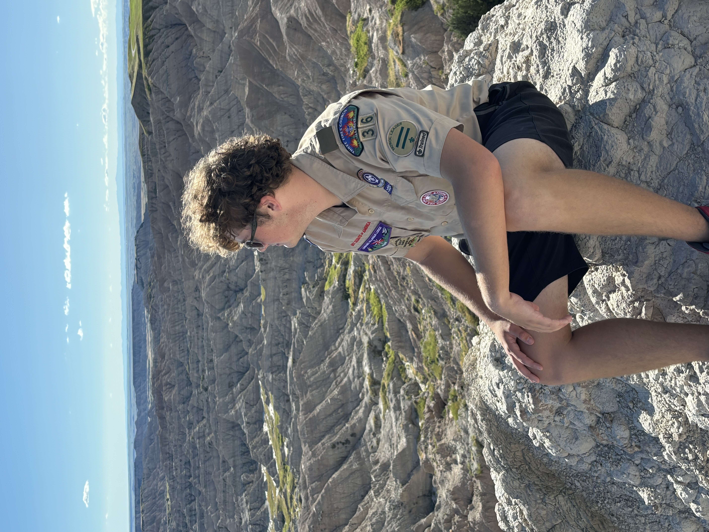
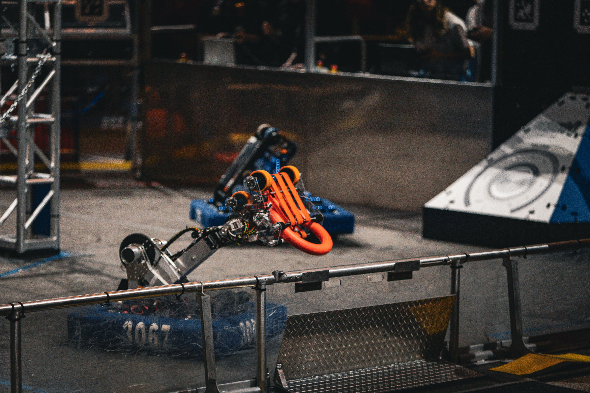
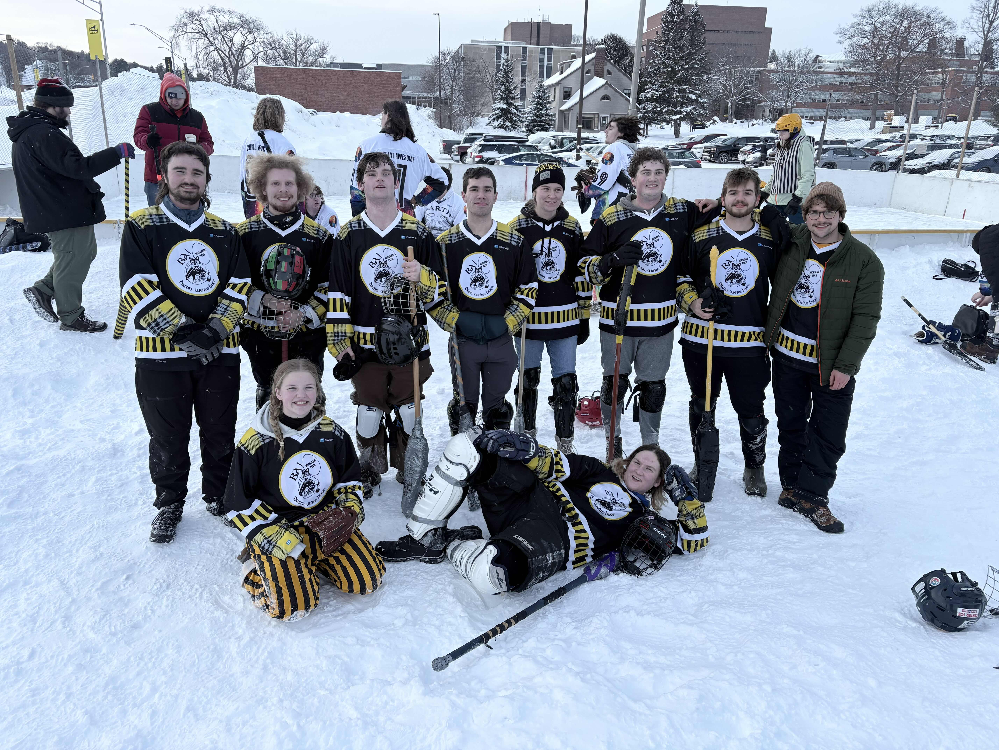

Email: njrudigier@gmail.com
LinkedIn: Nicholas Rudigier
GitHub: NR2005
Phone: (331) 223-0392
Location: Houghton, MI
Hi, I'm Nick! I'm a Computer Science student at Michigan Technological University with an obsession for figuring out how complex systems work under the hood. Whether I'm developing features for an early-stage startup, tackling software architecture in class, or tinkering with fun side projects on the weekend, nothing beats the feeling of taking an abstract idea and turning it into clean, working code.

Scouting has been part of my life since I was seven, shaping how I lead, adapt, and explore. Achieving my Eagle Scout rank, where I directed a team to build a community garden for my local church—taught me early on how to bring people together around a real-world project. Today, I still give back as a leader in my younger brother's troop during the summers. Beyond leadership, Scouting fueled my love for adventure, taking me from scuba diving in the Florida Keys to traversing the mountains and deserts of New Mexico on horseback.

My high school robotics team was the spark that hooked me on computer science. Serving as Programming Captain and competition drive Captain put me right at the intersection of code architecture and high-stakes execution. It's where I built my foundation in software testing practices, team coordination, and strict deadline discipline. Above all, it taught me grace under pressure, whether that meant rewriting control logic in 45 frantic minutes between matches or piloting our robot through the sensory overload of defensive bots, roaring crowds, and real-time strategy calls in my ear.

When I'm not in class, at work, or working on a project, I love bing active in the community here at MTU. One of my favorite activities is going to school events with the Huskies Pep Band. I have always been involved in music my whole life and the pep band gives me the oprotunity to continue that persuit of music into college. I fell in love with performing with the pep band because the energy of performing at an event, especially hockey is electric. Between playing my instrument, the hockey game istelf, and the screaming studetn section, performing with the band is one of my favorite things to do here at MTU. Another fun activity I love here at college is broom ball. When I joined my first team during my freshman year I fell in love with it. Something about sliding around on ice and trying to shoot a ball into a goal while falling over again and again with my friends is so much fun.

Bachelor of Science in Computer Science, with a Minor in Cybersecurity - Michigan Technological University, expecting to graduate spring of 2028
Backend Developer - Citadel Solutions LLC (2026-Present)
Student Computer Suport Technician - Michigan Technological University (2026-Present)
Front Dest/Concessions Attendant - Geneva Park District (summers 2023-2026)
Store Website
File Converter
Music Streaming Discord Bot
Minecraft Mod